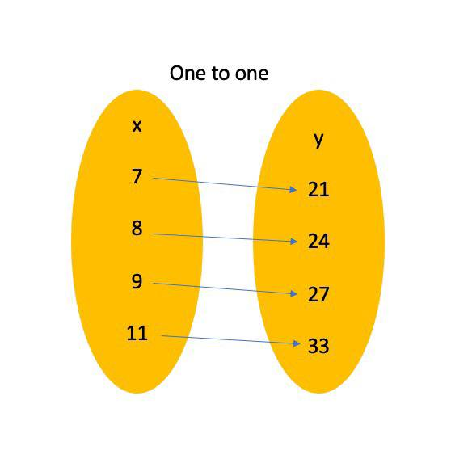

MATH-ICT Integrated Performance Task

John Miccoh Reyes
"Life is parang programming"

John Cyler Gutierrez
"Baliw sa school, mabait sa bahay"
One-to-One
One-to-Many correspondence refers to the relationship of the x and y values where one element of the domain is connected to multiple elements of the range.
Example
